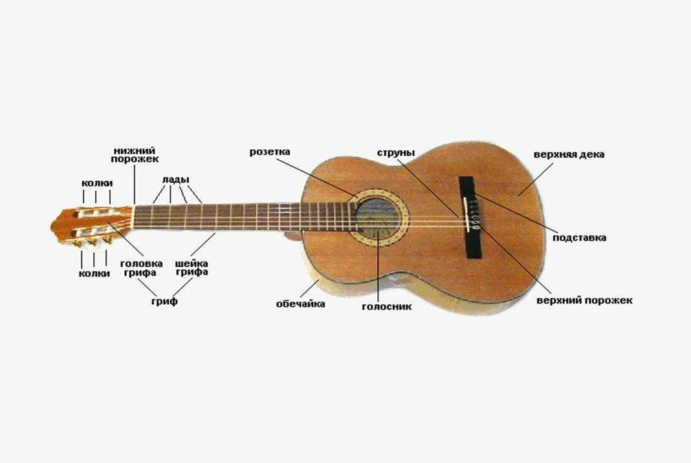

Основы
Что нужно для развития:
- классическа гитара (нейлоновые струны среднего натяжения);
- играть минимум 1-2 раза в неделю;
- тетрадь в клетку, записывать аккорды, теорию, пьессы(нотная тетрадь) и т.д;
- подставка под ногу;
- чехол утепленный(для переноса);
- не длинные ногти.
Терия в конспект
|
Струны: нейлоновые, металические.
Лад - расстояние одного порожка до другого. 3 вида натяжения струн:
|
Различия:
|


Техника безопасности:
- гитара лежит, а не стоит!
- защищать от воды и тепла.
- от маленьких детей и домашних животных.
- играем с подставкой и с настроенной гитарой.